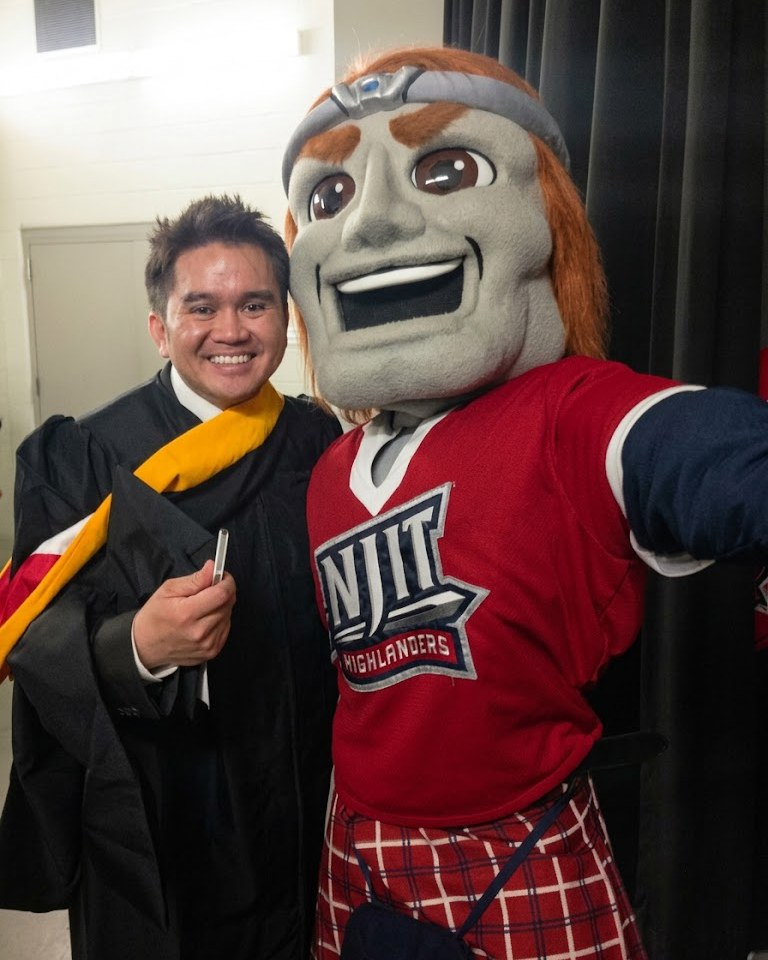

Web developer first. Then everything else.

Biography
I'm Ivan Balasi, a web developer and designer with 20+ years in the field.
For more than 15 of those years I've worked at NYU Langone Health's Office of Science and Research, where I'm Senior Manager, Web Development and Media Services. I build and run the office's websites and intranet, from Vilcek Institute program pages to SharePoint hubs and research chatbots. I care about the parts people don't notice when they're done right: clear structure, accessible pages, careful QA and useful analytics.
I'm also the office's photographer. Over more than a decade I've delivered over 30,000 images: headshots, events, faculty portraits and lab photography. I design print and digital pieces, produce video, and produce podcasts and distribute them on platforms like Apple Podcasts and Spotify.
Outside NYU Langone I take on freelance web projects, often accessibility-focused redesigns, and shoot portraits, street and sports.
Path
- Now
Senior Manager, Web Development and Media Services
Office of Science and Research, NYU Langone Health / NYU Grossman School of Medicine. Websites, intranet, chatbots, accessibility, analytics, photography and media.
- 2021–now
Web development support volunteer, Catchafire
I volunteer with nonprofits, helping them update and fix their websites and teaching their staff to manage content on their own.
- Earlier at OSR
Web Development Manager
Office of Science and Research, including the OSR website redesign and mobile concept.
- 2008–2013
Corporate and freelance web work
Ricoh USA corporate website and intranets, a Kraft product page, the ExpoTV CSR portal, a Pantene promo and sites for freelance clients. See the archive in Web work.
- Ongoing
Freelance web, design & photography
Websites, design, photography and ongoing support for outside clients.
Toolkit
Plain, durable tools. This site is built with plain HTML, CSS and JavaScript, with no framework.
Core skills
Web
- HTML, CSS, JavaScript
- WordPress, PHP, MySQL
- SharePoint & Microsoft 365
- Drupal, jQuery
- AI-assisted prototyping & coding
- SEO
Quality & insight
- WCAG accessibility, WAVE testing
- QA and stakeholder review
- Web analytics
- Microsoft Forms and Qualtrics
- Scribe how-to guides
- Microsoft Azure AI Essentials certificate
Media
- Canon R6
- Fujifilm X-T
- Lightroom Classic
- Photoshop
- Evoto
- Vimeo
Quick answers
Who is Ivan Balasi?
Ivan Balasi is a web developer and designer with more than 20 years of experience. He is Senior Manager, Web Development and Media Services at NYU Grossman School of Medicine's Office of Science & Research at NYU Langone Health.
What does Ivan Balasi do?
He leads web development, UX and website standards for the Office of Science & Research, builds intranet sites and AI chatbots such as OSR ConciergeBot, and handles much of the office's photography, graphic design and video.
What tools and platforms does he work with?
Drupal, WordPress, SharePoint and Microsoft 365, PHP, MySQL, HTML, CSS and JavaScript, web analytics, and AI chatbot platforms such as Gecko. For media: Canon cameras, Lightroom Classic and Photoshop.
Does he take freelance work?
Yes. Ivan takes on freelance web projects, including new websites, redesigns and ADA-compliant accessibility updates, as well as photography and design work. LinkedIn is the quickest way to reach him.
How long has he worked in web development?
More than 20 years, including over 15 years at NYU Langone Health's Office of Science and Research and earlier corporate and freelance work for clients such as Ricoh USA and Rutgers University.